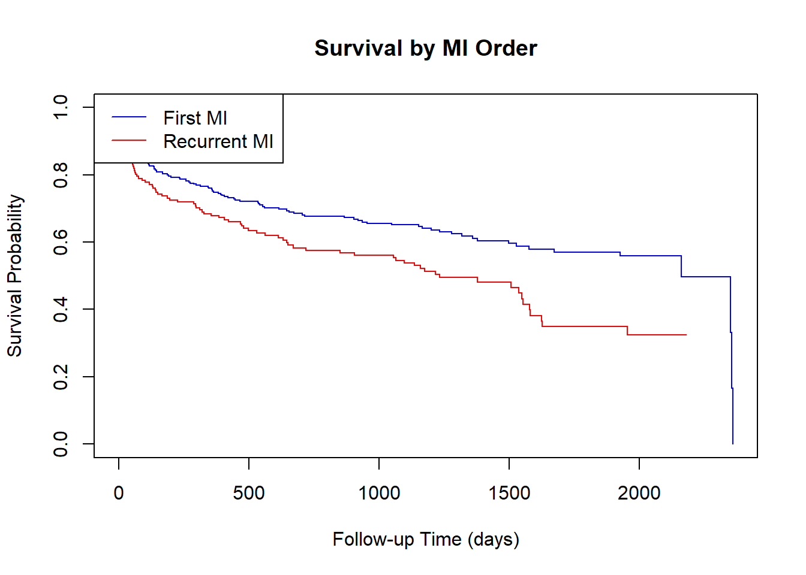

Call: survfit(formula = Surv(lenfol, fstat_numeric) ~ miord, data = whas500)
miord=first
time n.risk n.event survival std.err lower 95% CI upper 95% CI
1 329 5 0.985 0.00674 0.9717 0.998
2 324 7 0.964 0.01034 0.9435 0.984
3 317 1 0.960 0.01074 0.9397 0.982
4 316 2 0.954 0.01150 0.9321 0.977
5 314 1 0.951 0.01186 0.9284 0.975
6 313 4 0.939 0.01317 0.9137 0.965
7 309 3 0.930 0.01406 0.9029 0.958
10 306 1 0.927 0.01434 0.8994 0.956
11 305 2 0.921 0.01487 0.8923 0.951
14 303 2 0.915 0.01538 0.8852 0.946
16 301 1 0.912 0.01563 0.8817 0.943
17 300 1 0.909 0.01587 0.8782 0.940
18 299 2 0.903 0.01634 0.8713 0.935
19 297 2 0.897 0.01678 0.8644 0.930
22 295 1 0.894 0.01700 0.8609 0.928
33 294 2 0.888 0.01742 0.8540 0.922
34 292 1 0.884 0.01762 0.8506 0.920
37 291 1 0.881 0.01782 0.8472 0.917
42 290 1 0.878 0.01802 0.8438 0.914
46 289 1 0.875 0.01821 0.8404 0.912
57 288 1 0.872 0.01840 0.8370 0.909
61 287 1 0.869 0.01858 0.8336 0.906
64 286 1 0.866 0.01877 0.8303 0.904
69 285 1 0.863 0.01894 0.8269 0.901
81 284 1 0.860 0.01912 0.8235 0.898
83 283 1 0.857 0.01929 0.8202 0.896
88 282 1 0.854 0.01946 0.8168 0.893
93 281 1 0.851 0.01963 0.8134 0.890
95 280 1 0.848 0.01979 0.8101 0.888
97 279 1 0.845 0.01995 0.8068 0.885
100 278 1 0.842 0.02011 0.8034 0.882
108 277 1 0.839 0.02027 0.8001 0.880
109 276 1 0.836 0.02042 0.7968 0.877
113 275 1 0.833 0.02057 0.7935 0.874
116 274 1 0.830 0.02072 0.7902 0.871
117 273 1 0.827 0.02087 0.7868 0.869
134 272 1 0.824 0.02101 0.7835 0.866
135 271 1 0.821 0.02115 0.7802 0.863
137 270 1 0.818 0.02129 0.7770 0.860
140 269 1 0.815 0.02143 0.7737 0.858
145 268 1 0.812 0.02156 0.7704 0.855
146 267 1 0.809 0.02169 0.7671 0.852
169 266 2 0.802 0.02195 0.7605 0.847
187 264 1 0.799 0.02208 0.7573 0.844
192 263 1 0.796 0.02220 0.7540 0.841
200 262 1 0.793 0.02232 0.7507 0.838
233 261 1 0.790 0.02244 0.7475 0.836
235 260 1 0.787 0.02256 0.7442 0.833
259 259 2 0.781 0.02279 0.7377 0.827
269 257 1 0.778 0.02291 0.7345 0.824
274 256 1 0.775 0.02302 0.7312 0.822
287 255 1 0.772 0.02313 0.7280 0.819
297 254 1 0.769 0.02324 0.7248 0.816
313 253 1 0.766 0.02334 0.7215 0.813
343 252 1 0.763 0.02345 0.7183 0.810
345 251 1 0.760 0.02355 0.7151 0.807
358 250 1 0.757 0.02365 0.7119 0.805
359 249 2 0.751 0.02385 0.7054 0.799
363 247 1 0.748 0.02394 0.7022 0.796
382 241 1 0.745 0.02405 0.6989 0.793
392 237 1 0.741 0.02415 0.6956 0.790
397 236 1 0.738 0.02425 0.6923 0.787
405 231 1 0.735 0.02435 0.6889 0.784
419 223 1 0.732 0.02447 0.6854 0.781
442 215 1 0.728 0.02459 0.6818 0.778
446 210 1 0.725 0.02472 0.6781 0.775
465 202 1 0.721 0.02485 0.6743 0.772
535 186 1 0.718 0.02502 0.6701 0.768
537 185 1 0.714 0.02518 0.6659 0.765
542 184 1 0.710 0.02534 0.6618 0.761
552 181 1 0.706 0.02550 0.6576 0.758
559 179 1 0.702 0.02567 0.6533 0.754
614 170 1 0.698 0.02584 0.6489 0.750
646 168 1 0.694 0.02602 0.6444 0.747
654 167 1 0.689 0.02620 0.6400 0.743
673 164 1 0.685 0.02637 0.6355 0.739
704 162 1 0.681 0.02655 0.6309 0.735
714 161 1 0.677 0.02672 0.6264 0.731
865 159 1 0.673 0.02688 0.6218 0.727
903 158 1 0.668 0.02705 0.6173 0.723
920 157 1 0.664 0.02721 0.6128 0.720
936 156 1 0.660 0.02737 0.6082 0.716
953 155 1 0.655 0.02752 0.6037 0.712
1048 154 1 0.651 0.02767 0.5992 0.708
1152 137 1 0.646 0.02787 0.5941 0.703
1165 132 1 0.642 0.02809 0.5888 0.699
1200 123 1 0.636 0.02834 0.5832 0.694
1233 116 1 0.631 0.02862 0.5772 0.690
1279 105 1 0.625 0.02897 0.5706 0.684
1317 98 1 0.619 0.02937 0.5635 0.679
1359 90 1 0.612 0.02984 0.5559 0.673
1377 87 1 0.605 0.03031 0.5480 0.667
1496 71 1 0.596 0.03106 0.5382 0.660
1527 70 1 0.588 0.03176 0.5285 0.653
1576 69 1 0.579 0.03242 0.5189 0.646
1671 68 1 0.571 0.03304 0.5093 0.639
1926 51 1 0.559 0.03424 0.4961 0.631
2160 9 1 0.497 0.06603 0.3833 0.645
2350 3 1 0.331 0.14230 0.1429 0.769
2353 2 1 0.166 0.13710 0.0328 0.839
2358 1 1 0.000 NaN NA NA
miord=recurrent
time n.risk n.event survival std.err lower 95% CI upper 95% CI
1 171 3 0.982 0.0100 0.963 1.000
2 168 1 0.977 0.0116 0.954 1.000
3 167 2 0.965 0.0141 0.938 0.993
5 165 1 0.959 0.0152 0.930 0.989
6 164 1 0.953 0.0161 0.922 0.985
7 163 3 0.936 0.0188 0.900 0.973
10 160 2 0.924 0.0203 0.885 0.965
11 158 2 0.912 0.0216 0.871 0.956
17 156 1 0.906 0.0223 0.864 0.951
18 155 1 0.901 0.0229 0.857 0.947
19 154 1 0.895 0.0235 0.850 0.942
20 153 2 0.883 0.0246 0.836 0.933
22 151 1 0.877 0.0251 0.829 0.928
26 150 1 0.871 0.0256 0.823 0.923
31 149 1 0.865 0.0261 0.816 0.918
32 148 2 0.854 0.0270 0.802 0.908
33 146 1 0.848 0.0275 0.796 0.904
49 145 1 0.842 0.0279 0.789 0.899
52 144 1 0.836 0.0283 0.783 0.894
53 143 1 0.830 0.0287 0.776 0.889
55 142 1 0.825 0.0291 0.769 0.884
57 141 1 0.819 0.0295 0.763 0.879
60 140 1 0.813 0.0298 0.756 0.873
62 139 1 0.807 0.0302 0.750 0.868
64 138 1 0.801 0.0305 0.744 0.863
69 137 1 0.795 0.0309 0.737 0.858
76 136 1 0.789 0.0312 0.731 0.853
91 135 1 0.784 0.0315 0.724 0.848
101 134 1 0.778 0.0318 0.718 0.843
118 133 1 0.772 0.0321 0.712 0.837
129 132 1 0.766 0.0324 0.705 0.832
132 131 1 0.760 0.0326 0.699 0.827
140 130 1 0.754 0.0329 0.693 0.822
143 129 1 0.749 0.0332 0.686 0.816
151 128 1 0.743 0.0334 0.680 0.811
166 127 1 0.737 0.0337 0.674 0.806
187 126 1 0.731 0.0339 0.667 0.801
197 125 1 0.725 0.0341 0.661 0.795
226 124 1 0.719 0.0344 0.655 0.790
289 123 1 0.713 0.0346 0.649 0.785
295 122 1 0.708 0.0348 0.643 0.779
297 121 1 0.702 0.0350 0.636 0.774
312 120 1 0.696 0.0352 0.630 0.768
321 119 1 0.690 0.0354 0.624 0.763
328 118 1 0.684 0.0355 0.618 0.758
354 117 1 0.678 0.0357 0.612 0.752
385 114 1 0.672 0.0359 0.606 0.747
406 111 1 0.666 0.0361 0.599 0.741
422 109 1 0.660 0.0363 0.593 0.735
467 103 1 0.654 0.0365 0.586 0.729
473 102 1 0.647 0.0367 0.579 0.723
479 100 1 0.641 0.0369 0.573 0.717
497 98 1 0.634 0.0371 0.566 0.711
530 94 1 0.628 0.0373 0.559 0.705
562 87 1 0.620 0.0376 0.551 0.699
612 84 1 0.613 0.0378 0.543 0.692
632 82 1 0.606 0.0381 0.535 0.685
644 81 1 0.598 0.0384 0.527 0.678
649 80 1 0.591 0.0386 0.520 0.671
670 79 1 0.583 0.0388 0.512 0.664
718 78 1 0.576 0.0390 0.504 0.658
849 77 1 0.568 0.0392 0.496 0.651
905 76 1 0.561 0.0394 0.489 0.644
1054 75 1 0.553 0.0396 0.481 0.637
1065 74 1 0.546 0.0398 0.473 0.630
1096 73 1 0.538 0.0399 0.465 0.623
1136 68 1 0.530 0.0401 0.457 0.615
1159 65 1 0.522 0.0403 0.449 0.608
1174 61 1 0.514 0.0406 0.440 0.600
1217 57 1 0.505 0.0408 0.431 0.591
1232 55 1 0.495 0.0411 0.421 0.583
1377 35 1 0.481 0.0423 0.405 0.572
1506 29 1 0.465 0.0440 0.386 0.559
1536 28 1 0.448 0.0454 0.367 0.547
1548 27 1 0.432 0.0467 0.349 0.533
1553 26 1 0.415 0.0477 0.331 0.520
1577 25 1 0.398 0.0486 0.314 0.506
1579 24 1 0.382 0.0494 0.296 0.492
1624 23 1 0.365 0.0499 0.279 0.477
1627 22 1 0.349 0.0503 0.263 0.463
1954 14 1 0.324 0.0525 0.235 0.445